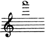
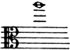
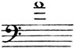
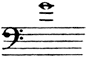
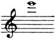
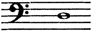

配器法原理：繁體中文版
A. 弦樂器
A. 弦樂器
下表列出弦樂組的構成，以及本書時代劇院或音樂廳樂團所需的演奏人數。
| 樂器 | 大型樂團 | 中型樂團 | 小型樂團 |
| 第一小提琴 | 16 | 12 | 8 |
| 第二小提琴 | 14 | 10 | 6 |
| 中提琴 | 12 | 8 | 4 |
| 大提琴 | 10 | 6 | 3 |
| 低音提琴 | 8-10 | 4-6 | 2-3 |
更大的樂團，第一小提琴可達20人，甚至24人，其餘弦樂按比例增加。但如此大量的弦樂，會壓過通常的木管編制，因此後者也必須增強。有時樂團第一小提琴少於8人；作者認為這是錯誤，因為弦樂與管樂的平衡會完全被破壞。為樂團寫作，宜以中型弦樂編制為依據：較大樂團演奏時，作品會呈現得更好；較小樂團演奏時，損失也能減到最少。-7-
若弦樂要寫成超過五個聲部，先不計雙音與和弦，就可以把原聲部分成二、三、四部，甚至更多，這稱為分部（divisi）。通常拆分一個或多個主要聲部，例如第一或第二小提琴、中提琴或大提琴。可以依譜架分配，第1、3、5號等奏上聲部，第2、4、6號等奏下聲部；也可以每個譜架右側樂手奏上聲部、左側樂手奏下聲部。分成三部較不容易，因為各組人數未必能被三整除，不易取得適當平衡。不過，有些情況下，作曲家仍應毫不猶豫地採用，讓指揮設法平衡音量。最好在總譜標明分配方式，例如Vns I，1、2、3 desks，指第一小提琴的第1、2、3譜架；6 ’Cellos div. à 3，指六位大提琴分成三部，等等。分成四部以上較少見，但可用於弱奏段落，因為它會大幅減弱弦樂組每一聲部的聲響。
註：小型樂團很難實現分成許多聲部的樂段，所得效果也達不到原來要求。
弦樂聲部可作以下分配：
| a | { | 第一小提琴分部 第二小提琴分部 | b | { | 第二小提琴分部 中提琴分部 | c | { | 中提琴分部 大提琴分部 | d | { | 大提琴分部 低音提琴分部 |
較少使用、但也可行的組合：
| e | { | 第一小提琴分部 中提琴分部 | f | { | 第二小提琴分部 大提琴分部 | g | { | 中提琴分部 低音提琴分部等 |
註：b與e的音色顯然相似，但b較佳：第二小提琴人數14／10／6，與中提琴12／8／4相近；兩組的音樂角色也更接近。而且，第二小提琴通常比第一小提琴更靠近中提琴，因此音量與演奏更容易統一。
弦樂器的發聲方式，比其他管弦樂組更多；也更善於在不同表情層次之間轉換，變化幾乎無窮。連奏（legato）、分弓、斷奏（staccato）、跳弓（spiccato）、滑音（portamento）、錘擊式弓法（martellato）、輕斷奏、連續彈跳弓（saltando），在弓根或弓尖起音，下弓與上弓，以及各種力度：極強（fortissimo）、極弱（pianissimo）、漸強（crescendo）、漸弱（diminuendo）、突強（sforzando）、逐漸消逝（morendo）——都屬於弦樂組自然擅長的範圍。
弦樂器能奏雙音，以及跨三、四條弦的完整和弦；再加上聲部可以細分，使它們不只有旋律性，也具有和聲性。[7]
論靈活與敏捷，小提琴居弦樂器之首，其次依序是中提琴、大提琴與低音提琴。實務上，弦樂組常用高音的上限，宜定為：
小提琴：

，即A₆；中提琴：
，即A₅。大提琴：

，即A₄；低音提琴：
，記譜G₄、實音G₃。表A列出的更高音，只宜謹慎使用，例如長音、顫弓、緩慢流動的旋律、速度不太快的音階段落，或同音反覆。應避免跳進。
註：快速弦樂段落不適合長串半音音型；它們難奏，聲音也容易含糊混濁。這類段落交給木管較好。
小提琴、中提琴與大提琴的三條較低弦，各自使用高音時也應有界限。作者把界限放在第四把位附近，也就是該空弦上方八度或九度的音。-9-
高貴、溫暖，以及從低到高音色均勻，是所有弦樂器共有的特質，作者認為這使它們本質上優於其他組別。各條弦又有自己的特色，難以言語盡述。小提琴最高的E弦燦爛明亮；中提琴最高的A弦較銳利，稍帶鼻音；大提琴最高的A弦明亮，具有「胸聲」般的音色。小提琴A、D弦，以及中提琴與大提琴D弦，比其他弦稍柔甜、較弱。小提琴的G纏弦，以及中提琴、大提琴的G、C纏弦，較粗獷。大體而言，低音提琴各音域共鳴相當均勻，較低的E、A弦稍暗，較高的D、G弦較有穿透力。
註：除持續低音外，低音提琴很少奏獨立聲部，通常與大提琴以八度或同度同行，或重複低音管。因此，低音提琴音色較少單獨被聽到，各弦之間的性格差異也不那麼顯著。
弦樂善於連接單音與整串音符，按弦發聲的振動，加上前述溫暖、高貴的音色，使它成為樂團中表達旋律最出色的媒介。不過，超出人聲範圍的那部分音域，例如小提琴高於女高音極限的音，從下列音開始向上：

E₆。以及低音提琴低於男低音範圍的音，從下列音開始向下：

（記譜D₃，實音D₂。）都會減少表情與音色的溫暖。空弦比按弦音更清楚、有力，但表情較少。
若把弦樂器音域與人聲比較，可以這樣對應：小提琴涵蓋女高音、-10-女低音，並向上延伸很多；中提琴涵蓋女低音、男高音，並有更高音域；大提琴涵蓋男高音、男低音，並向上延伸；低音提琴則涵蓋男低音，並向下延伸。
泛音、弱音器與某些特殊弓法，能大幅改變所有這些樂器的共鳴與音色。
本書時代已常使用泛音，它會明顯改變弦樂音色：弱奏時冷冽透明，強奏時冷冽明亮，但表情餘地較少。作者因此認為，泛音不屬於管弦樂寫作的基礎要素，主要用於裝飾。由於共鳴力量不足，應節制使用，也不可被其他樂器蓋過。一般用於持續音、顫弓，或偶爾營造燦爛效果，很少用於極簡單的旋律。泛音與長笛音色有某種相似，可說是弦樂與木管之間的連接。
弱音器也能造成根本變化。加上弱音器後，弦樂清晰、如歌的聲音，弱奏時變得暗淡，強奏時略帶嘶聲或哨音，音量也大幅減少。
弓在弦上的接觸位置，也會影響共鳴。靠近琴橋拉奏（sul ponticello），主要用於顫弓，會產生金屬感；在指板上方拉奏（sul tasto、flautando），則帶來較暗、朦朧的效果。
註：用弓背或弓木奏弦（col legno），又會產生全然不同的聲音，近似木琴或空洞的撥奏聲。本書在「持續能力較弱的樂器」部分討論它。
{kind=link}
- Violin (I.II.)＝小提琴，第一、第二聲部；
- Viola＝中提琴；
- Violoncello＝大提琴；
- Double bass＝低音提琴。
- G string／D string／A string／E string／C string分別為G、D、A、E、C弦；
- I、II、III、IV依序指低、中、高、極高音域。
- harm.＝泛音；
- 小圓圈標示泛音，8與虛線表示高八度。
上方實線分別標出各弦的一般可用範圍，下方虛線區分音域。
依上表人數配置的五個弦樂聲部，能得到相當均衡的聲響。若某一方稍強，應是第一小提琴，因為它在和聲配置中的角色重要，必須清楚可聞。此外，樂團通常會多編一個譜架的第一小提琴；-12-一般而言，第一小提琴也比第二小提琴更有力。第二小提琴與中提琴通常擔任次要角色，較不突出；大提琴與低音提琴則較明顯，多半以八度形成低音。
總而言之，弦樂組作為旋律要素，能演奏各種樂段、快速或斷續樂句，不論自然音或半音性質。它能輕易維持長音，演奏三音、四音和弦，適應無窮的表情變化，也容易拆成多個聲部。因此，管弦樂團中的弦樂組，也是一個手段極豐富的和聲要素。
查看英文原文
A. Stringed Instruments.
The following is the formation of the string quartet and the number of players required in present day orchestras, either in the theatre or concert-room.
| Full orchestra | Medium orchestra | Small orchestra | |
| Violins I | 16 | 12 | 8 |
| " II | 14 | 10 | 6 |
| Violas | 12 | 8 | 4 |
| Violoncellos | 10 | 6 | 3 |
| Double basses | 8-10 | 4-6 | 2-3 |
In larger orchestras, the number of first violins may amount to 20 and even 24, the other strings being increased proportionately. But such a great quantity of strings overpowers the customary wood-wind section, and entails re-inforcing the latter. Sometimes orchestras contain less than 8 first violins; this is a mistake, as the balance between strings and wind is completely destroyed. In writing for the orchestra it is advisable to rely on a medium-sized body of strings. Played by a larger orchestra a work will be heard to greater advantage; played by a smaller one, the harm done will be minimised.-7-
Whenever a group of strings is written for more than five parts—without taking double notes or chords into consideration—these parts may be increased by dividing each one into two, three and four sections, or even more (divisi). Generally, one or more of the principal parts is split up, the first or second violins, violas or violoncellos. The players are then divided by desks, numbers 1, 3, 5 etc. playing the upper part, and 2, 4, 6 etc., the lower; or else the musician on the right-hand of each desk plays the top line, the one on the left the bottom line. Dividing by threes is less easy, as the number of players in one group is not always divisible by three, and hence the difficulty of obtaining proper balance. Nevertheless there are cases where the composer should not hesitate to employ this method of dividing the strings, leaving it to the conductor to ensure equality of tone. It is always as well to mark how the passage is to be divided in the score; Vns I, 1, 2, 3 desks, 6 'Cellos div. à 3, and so on. Division into four and more parts is rare, but may be used in piano passages, as it greatly reduces volume of tone in the group of strings.
Note. In small orchestras passages sub-divided into many parts are very hard to realise, and the effect obtained is never the one required.
String parts may be divided thus:
| a | { | Vns I div. Vns II div. |
b | { | Vns II div. Violas div. |
c | { | Violas div. 'Cellos div. |
d | { | 'Cellos div. D. basses div. |
Possible combinations less frequently used are:
| e | { | Vns I div. Violas div. |
f | { | Vns II div. 'Cellos div. |
g | { | Violas div. D. basses div. etc. |
Note. It is evident that the tone quality in b and e will be similar. Still b is preferable since the number of Vns II (14-10-6) and Violas (12-8-4) is practically the same, the respective rôles of the two groups are more closely allied, and from the fact that second violins generally sit nearer to the violas than the first, thereby guaranteeing greater unity in power and execution.
The reader will find all manner of divisions in the musical examples given in Vol. II. Where necessary, some explanation as to the method of dividing strings will follow in due course. I dwell on the subject here in order to show how the usual composition of the string quartet may be altered.-8-
Stringed instruments possess more ways of producing sound than any other orchestral group. They can pass, better than other instruments from one shade of expression to another, the varieties being of an infinite number. Species of bowing such as legato, detached, staccato, spiccato, portamento, martellato, light staccato, saltando, attack at the nut and at the point, and (down bow and up bow), in every degree of tone, fortissimo, pianissimo, crescendo, diminuendo, sforzando, morendo—all this belongs to the natural realm of the string quartet.
The fact that these instruments are capable of playing double notes and full chords across three and four strings—to say nothing of sub-division of parts—renders them not only melodic but also harmonic in character.[7]
From the point of view of activity and flexibility the violin takes pride of place among stringed instruments, then, in order, come the viola, 'cello and double bass. In practice the notes of extreme limit in the string quartet should be fixed as follows:
for violins: , for violas: ,
for 'cellos: , for double basses: .
Higher notes given in Table A, should only be used with caution, that is to say when they are of long value, in tremolando, slow, flowing melodies, in not too rapid sequence of scales, and in passages of repeated notes. Skips should always be avoided.
Note. In quick passages for stringed instruments long chromatic figures are never suitable; they are difficult to play and sound indistinct and muddled. Such passages are better allotted to the wood-wind.
A limit should be set to the use of a high note on any one of the three lower strings on violins, violas and 'cellos. This note should be the one in the fourth position, either the octave note or the ninth of the open string.-9-
Nobility, warmth, and equality of tone from one end of the scale to the other are qualities common to all stringed instruments, and render them essentially superior to instruments of other groups. Further, each string has a distinctive character of its own, difficult to define in words. The top string on the violin (E) is brilliant in character, that of the viola (A) is more biting in quality and slightly nasal; the highest string on the 'cello (A) is bright and possesses a "chest-voice" timbre. The A and D strings on the violin and the D string on the violas and 'cellos are somewhat sweeter and weaker in tone than the others. Covered strings (G), on the violin (G and C), on the viola and 'cello are rather harsh. Speaking generally, the double bass is equally resonant throughout, slightly duller on the two lower strings (E and A), and more penetrating on the upper ones (D and G).
Note. Except in the case of pedal notes, the double bass rarely plays an independent part, usually moving in octaves or in unison with the 'cellos, or else doubling the bassoons. The quality of the double bass tone is therefore seldom heard by itself and the character of its different strings is not so noticeable.
The rare ability to connect sounds, or a series of sounds, the vibration of stopped strings combined with their above-named qualities—warmth and nobility of tone—renders this group of instruments far and away the best orchestral medium of melodic expression. At the same time, that portion of their range situated beyond the limits of the human voice, e.g. notes on the violin higher than the extreme top note of the soprano voice, from
upwards, and notes on the double bass below the range of the bass voice, descending from
(written sound)
lose in expression and warmth of tone. Open strings are clearer and more powerful but less expressive than stopped strings.
Comparing the range of each stringed instrument with that of the human voice, we may assign: to the violin, the soprano and-10- contralto voice plus a much higher range; to the viola, the contralto and tenor voice plus a much higher register; to the 'cello, the tenor and bass voices plus a higher register; to the double bass, the bass voice plus a lower range.
The use of harmonics, the mute, and some special devices in bowing produce great difference in the resonance and tone quality of all these instruments.
Harmonics, frequently used today, alter the timbre of a stringed instrument to a very appreciable extent. Cold and transparent in soft passages, cold and brilliant in loud ones, and offering but little chance for expression, they form no fundamental part of orchestral writing, and are used simply for ornament. Owing to their lack of resonant power they should be used sparingly, and, when employed, should never be overpowered by other instruments. As a rule harmonics are employed on sustained notes, tremolando, or here and there for brilliant effects; they are rarely used in extremely simple melodies. Owing to a certain tonal affinity with the flute they may be said to form a kind of link between string and wood-wind instruments.
Another radical change is effected by the use of mutes. When muted, the clear, singing tone of the strings becomes dull in soft passages, turns to a slight hiss or whistle in loud ones, and the volume of tone is always greatly reduced.
The position of the bow on the string will affect the resonance of an instrument. Playing with the bow close to the bridge (sul ponticello), chiefly used tremolando, produces a metallic sound; playing on the finger-board (sul tasto, flautando) creates a dull, veiled effect.
Note. Another absolutely different sound results from playing with the back or wood of the bow (col legno). This produces a sound like a xylophone or a hollow pizzicato. It is discussed under the heading of instruments of little sustaining power.
Table A. String group.
(These instruments give all chromatic intervals.)
[Enlarge]
Black lines on each string denote the general range in orchestral writing, the dotted lines give the registers, low, medium, high, very high.
The five sets of strings with number of players given above produce a fairly even balance of tone. If there is any surplus of strength it must be on the side of the first violins, as they must be heard distinctly on account of the important part they play in the harmonic scheme. Besides this, an extra desk of first violins is usual in all orchestras, and as a general-12- rule they possess a more powerful tone than second violins. The latter, with the violas, play a secondary part, and do not stand out so prominently. The 'cellos and double basses are heard more distinctly, and in the majority of cases form the bass in octaves.
In conclusion it may be said that the group of strings, as a melodic element, is able to perform all manner of passages, rapid and interrupted phrases of every description, diatonic or chromatic in character. Capable of sustaining notes without difficulty, of playing chords of three and four notes; adapted to the infinite variety of shades of expression, and easily divisible into numerous sundry parts, the string group in an orchestra may be considered as an harmonic element particularly rich in resource.